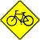
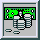

Site Index
- Hot Links
- Bicycle Commuting and Advocacy
- Magazines
- Lists of Sites
- Companies
- Bicycle Organizations
- Bicycle Teams and Clubs
- Rides and Touring Information
- Racing Calendars
- Race Information and Results
- Mountain Biking
- Bicycle Safety
- Regional Information
- Out of Category
- Pictures
- Mailing Lists
- A word from your host
- Awards
- Local news
Hot Links
- Strava detailed analysis of all your rides and climbs based on your GPS data.
- Topix.net Cycling News up to the minute cycling news.
- C.H.U.N.K. 666 a chopper bicycle gang
- Campagnolo Only! devoted the world's finest bicycling components.
- King of the Mountains Cycling Road Climbs
- Le Tour de France the official Tour de France site
- Mad Dog Media biting commentary and hilarious cartoons by Patrick O'Grady
- Rivendell Bicycle Works Lugged steel frames at their best.
- VeloNews
- Cycling News
- WOMBATS Women's Mountain Bike & and Tea Society
 Bicycle Commuting and Advocacy
- League of American Bicyclists bicycle advocacy
- Bay Area Bicycle Coalition
- Bicycling Life a web-site for everyday bicyclists.
- Transportation Alternatives Grass-roots Bike advocacy in New York City
- Bicycle-Friendly Berkeley Coalition
- Ken Kifer's Bike Pages great stuff about biking.
- United Bicycle Institute
Magazines
- Cycling News
- VeloNews
- Dirt Rag a mountain biking magazine, with an edge.
- Gear Head an Organic mountain bike magazine
- The Classic and Antique Bicycle Exchange
- Tandem Magazine
Lists of Sites
- The Open Directory's Bicycling Index a comprehensive index of online biking resources
- Bikeride.com Bicycling informatin network
- Yahoo's cycling page
 Companies
- Hunter Cycles custom frames.
- Rock Lobster
- Brompton Folding bikes
- Cannondale U.S. made aluminum bicycles.
- Giant Bicycles manufacture mountain, Road, Touring, BMX, Hybrid, and Kids bikes
- Ibis Cycles
- Specialized product and team information
- Trek Bicycle Corporation
- VooDoo Bicycles
- Competitive Cyclist
- Colorado Cyclist online version of the great catalog
- Excel Sports Boulder online version of the great catalog
- Bike Nashbar
- Bike World online catalog
- Gibraltar Internet Bikes online catalog
- Performance Bicycle online version of catalog
- Price Point: bike parts, clothing, and accessories
- Campagnolo fine Italian craftsmanship
- Shimano The Microsoft of bike components.
- SRAM makers of Gripshift and ESP derailleur
- Syncros cool bike products.
- Full Speed Ahead components
- Kreitler Rollers Simply the best.
- CompuTrainer bike trainer
- Giro Helmets
- Dero Bike Rack Co.
- Bike Pannier Site
- Limar Helmets Manufacturer of cycling helmets
- Rolf wheels light, strong, and aerodynamic
- Self-locking bikes
- Speedplay pedals
- SportShip makers of the VeloCase
- Wallingford Bicycle Parts specializing in Brooks saddles
- Athlete's Diary Software
- Training Peaks Training and Nutrition Software
- author of the Cyclist's Training Bible
- Carmichael Training
- Coach Thomas author of Base Building for Cyclists
- Carmichael Training
- Dirt Camp mountain biking camp.
- Ultimate Performance National Cycling Camps
- Andiamo Adventours guided tours of Europe, the Tour de France, and California
- Sporting Tours cycling holidays designed by Graham Baxter
- RAGBRAI the Register's Annual Great Bicycle Ride Across Iowa.
- The Chain Gang Cycle Tours tours of France.
- ExperiencePlus! Specialty Tours cycling and walking tours.
- Action Trips tour database
- Adventure Sport Outdoor adventures, tours and rides.
- America By Bicycle bicycle tours.
- Bicycle Beano cycling holidays in Wales
- Bike ON Tours Ontario Canada
- Easy Rider Tours
- Europeds Cycling and Walking Europe
- La Corsa Tours European bike tours
- Oklahoma Freewheel Yearly June ride across Oklahoma - sponsored by the Tulsa World newspaper
- Rocky Mountain Cycle Tours
- Tour BC British Columbia's Premier Bicycle Tours
- ACME Bicycle Shop in Punta Gorda, FL
- The Bicycle Outfitter bike shop in Los Altos, CA
- Cupertino Bike Shop in Cupertino, CA
- Palo Alto Bicycles bike shop in Palo Alto, CA
- Rivendell Bicycle Works
- Adventurous Traveler Bookstore books, maps, and videos.
- BikNet WWW Bicycle Guide
- Bike'alog a complete list of bicycle specifications.
- Cyber Cyclery bicycling resources
- CycleLink the Bicycle Industry Organization Web Site
- CycleOps stationary trainers
- Mountain Bike Almanac a mountain biking resource guide
- PR bar
- S and S Machine Bicycle Torque Couplings
- ZAP Electric Bikes
Custom Frame Builders
Manufacturers
Online Shopping
Components
Accessories
Software
Camps and Coaching
Tours
Shops
Miscellaneous
Bicycle Organizations
- Bike West Virginia Races, tours, and organizations in WV.
- CORBA - The Concerned Off-Road Bicyclists Association
- International Bicycle Fund
- League of American Bicyclists bicycle advocacy
- League of Michigan Bicyclists
- National Bicycle History Archive of America
- Northern California/ Nevada Cycling Association Homepage
- Tri-County Bicycle Association Lansing, Michigan
- VeloNet The Global Cycling Network
- West Virginia Rails-to-Trails Council
Bicycle Teams and Clubs
- Almaden Cycle Touring Club San Jose, CA
- Ann Arbor Bicycle Touring Society Ann Arbor, MI
- B.I.K.E.S. Club Snohomish County, WA
- Bike & Brunch, Inc DC-Baltimore area
- Birmingham Bicycle Club Birmingham, AL
- Bloomington Bicycle Club, Indiana
- Boise Cycling Club Idaho
- Cascade Bicycle Club
- Chain Reaction Cycling Club Western, KY
- Cincinnati Cycle Club Cincinnati, OH
- Clubs in the Mid-Atlantic
- Dayton Cycling Club Ohio
- Delft Student Cycle Club Netherlands
- Durham University Cycling Club UK
- East Coast Bicycle Club Ocean County, NJ
- East Coast Bicycle Club Ocean County, NJ
- Freewheelers of Spartanburg Spartanburg, SC"
- Hawaii Bicycle League
- Louisville Bicycle Club KY
- MORE (Mid-Atlantic Off Road Enthusiasts)
- Montgomery Bicycle Club, AL
- Motorola professional cycling team
- Murfreesboro Bicycle Club Tennessee
- Naperville Bicycle Club Illinois
- New Jersey Cycling
- North Chattanooga Cycle Club Chattanooga, TN
- Northeast Bicycle Club Bedford, MA
- Ottawa Bicycle Club Canada
- Pittsburgh Bicycling
- Potomac Pedalers Touring Club Washington DC
- Pursuit Cycle Club Southern, NJ
- Rocky Mountain Cycling Club
- Santa Rosa Cycling Club Santa Rosa, CA
- Saturn professional cycling team
- Sleepy Hollow Bicycle Club New York
- Smoky Mountain Wheelmen in Knoxville, TN
- Spokes & Folks Bicycle Club WI and MI
- Spring City Cycling Club Huntsville, AL
- Stark County Bicycle Club Stark County, OH
- Tarwheels Bicycle Club NC
- The Moulton Bicycle Club
- The Redmond Cycling Club Bothell, WA
- Tri-Cities Road club Johnson City, TN
- Wabash River Cycle Club Lafayette, IN
- Washington Area Bicyclist Association (D.C.)
- Wichita Mountains Bicycle Club Oklahoma
- Wolf Pack Bicycle Club Houston, TX
Rides and Touring Information
- Bike Centuries non-competitive bike rides and centuries.
- Pittsburgh Hills a list of steep hills in Pittsburgh, PA.
- Around Australia Chris Grant's record attempt
- Biker's Barbecue Two Austrians tour America by bicycle and write a travelogue
- Australian Big Bike Ride a week-long bike tour in New South Wales
- BRAG The Bicycle Ride Across Georgia
- Bike Vermont Inn-to-Inn Bicycle Tours
- Biking Across Kansas (June 10-17) with weather and progress updates!
- Boston Brevet Series randonneuring
- Cotswold Cycling Company in the UK
- Cyclevents, cross state and cross country rides unlike any others.
- Island Bikes Caribbean bike tours
- Mojave by Moonlight ride the California desert
- Moose Tour sponsored by Maine Wheels Bicycle Club
- Oklahoma FreeWheel, a cross-state ride
- Out Spokin' Adventures
- Randonneuring
- Southern Oregon Cycling Association one-stop source for cycling in Oregon
- The Bicycle Touring Select
- The San Diego Cycling Page
- Tour d' Aliso Viejo in Orange County, CA
- Tour of Nebraska
- Tour of Texas
- Trento Bike Pages list of European rides, races, and other biking resources.
- Utah Cycling Network the greatest biking on earth
Racing Calendars
- BikeCal.com Guide to Bicycle Rides in Northern California
- Canadian Racing Info
- Colorado Mountain Bike Racing
- Cycling Calendar by Team Internet
- New England Racing Calendar
- Racing Calendar courtesy of Cyber Cyclery
- Road and Track results for Northern California and Nevada
Race Information and Results
- Tour de France Official site
- CyclingNews.com Racing Results and News Service
- Dutch Ultra Cycle Race
- Fat Nick's European Track Cycling Journal
- Hotter'N Hell Hundred in Texas
- Tour of Texas
- Olympic Cycling Atlanta, GA
- Peter Becker's Cycling Homepage with racing results (old)
- The 96 Transam Heart Ride
- Tour of Malaysia
Mountain Biking
- Backcountry Bicycle Trails Club Seattle, WA
- ChainLink with Washington, D.C. ride info
- Colorado Mountain Bike Racing
- DIS Mountain Biking with news, training advice, ride info, and more...
- Dawn to Dust Mountain Bike Club
- MTB Review equipment resource
- Mountain Bike Resources
- North Texas Mountain Biking
- Ohio University Mountain Bike Club
- Ontario Mountain Bike Page
- RaceWeb Mountain Bike Racing Hub
- Rick's RideMidwest Page ...everything to ride the central US.
- Singletrak for the San Francisco Bay area.
- Sooner Pearl BMX Raceway BMX Racing
Bicycle Safety
- Bicycle Helmet Safety Institute
- Chainguard Online bicycling safety
- Cyclist's Rights Action Group
- Effective Cycling Bicycle Education
- Ontario Coalition for Better Cycling
- Ride Safe Bicycle Helmet Store discount helmets
- Snell Memorial Foundation's home page
- WHO Helmet Initiative
Regional Information
- San Francisco Bay Area Climbs San Francisco, CA
- Johnson County Bike Routes Johnson County, TX.
- BIKE-CANADA Web Directory
- Bike Rides In Indiana
- BikeMap.com regional bicycle maps and rides
- Community Cycling Center Portland, OR
- Fort Worth, Texas Ride calendar
- Mid-Atlantic Ride Calendar
- Séamus Shortall's Irish Cycling Page.
- San Francisco Bay Area Trails
- Tampa Bay Cycling Online
- The Boy Cyber Cycle in Canada
- Vancouver Cycling Information
Out of Category
- Fixed Gear Fever, just for trackies
- Athletic Training Center
- Best of the West Jr. stage race
- Bicycle - The pedal touring rock band
- American Bicycle Polo Association rules, equipment, teams, etc.
- Bike Colorado with a free online training log
- Chain Reaction Bringing people together through art.
- Cycling Performance Tips
- Dave & Babak's Cross-Country Bicycle Trip
- Eclectic Web with some biking links
- Lehigh County Velodrome
- Mud Sluts
- Ney York Pedicabs
- PB's Triathlon Home Page
- Unicycles
 |
Tour De France: A Visual History |
Pictures
- Tour De France/Tour De Force : A Visual History... (Book)
- De Muynck climbs alone in the Alps. (JPG)
- Eddie Merckx solos to a finish. (JPG)
- Francisco Moser on the way to breaking his previous hour record. (JPG)
- Indurain time trailing in the '92 Tour (TIOOYK). (JPG)
- Karen Kurreck on the podium at the '94 Worlds. (JPG)
- Karen Kurreck riding to a gold medal in the '94 Worlds ITT. (JPG)
{kind=link}
{kind=link}
{kind=link}
{kind=link}
{kind=link}
{kind=link}
 Mailing Lists
Mailing Lists
- Cycling.org mailing lists
- bicycle discussion lists
A word from your host
When I created this page in 1993, there weren't more than
about 6 noteworthy bicycling related Web pages. Now there
are too many to keep track. I received many additions and
corrections every week, so its a real challenge to keep on
top of things.
Currently, I am working at Blekko.
Work doesn't always give me
the time I need to keep maintain this page the way I'd like,
but I can now afford my own domain www.Bikelane.com
so now it will be that much easier to remember the URL.
As always, please continue to help me out by submitting new
links. I'm looking to keep all the sections fresh with new
additions. Click here to submit a new link.
Thanks,
Bryn Dole
bikelane @ bikelane . com
July 11, 2008